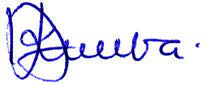

Shukurani
Taasisi ya Elimu Tanzania (TET) inatambua na kuthamini mchango muhimu wa washiriki kutoka taasisi mbalimbali za serikali na zisizo za serikali zilizoshiriki kufanikisha uandishi wa kitabu hiki cha mwanafunzi. Kipekee, TET inatoa shukurani kwa Chuo Kikuu Kishiriki cha Elimu Dar es Salaam (DUCE), Chuo Kikuu cha Dodoma (UDOM), Chuo Kikuu cha Sokoine (SUA), Chuo Kikuu cha Mzumbe (MU), Idara ya Uthibiti Ubora wa Shule, Vyuo vya Ualimu na Shule za Msingi. Pia, TET inatoa shukurani za dhati kwa mchango uliotolewa na wataalamu wafuatao:
Vilevile, TET inatoa shukurani kwa walimu wote wa shule za msingi na wanafunzi walioshiriki katika ujaribishaji wa kitabu hiki. Mwisho, TET inaishukuru Serikali ya Jamhuri ya Muungano wa Tanzania kwa kutoa fedha zilizofanikisha kazi ya uandishi na uchapaji wa kitabu hiki.

Maelezo ya picha: Sahihi ya Dkt. Aneth A. Komba